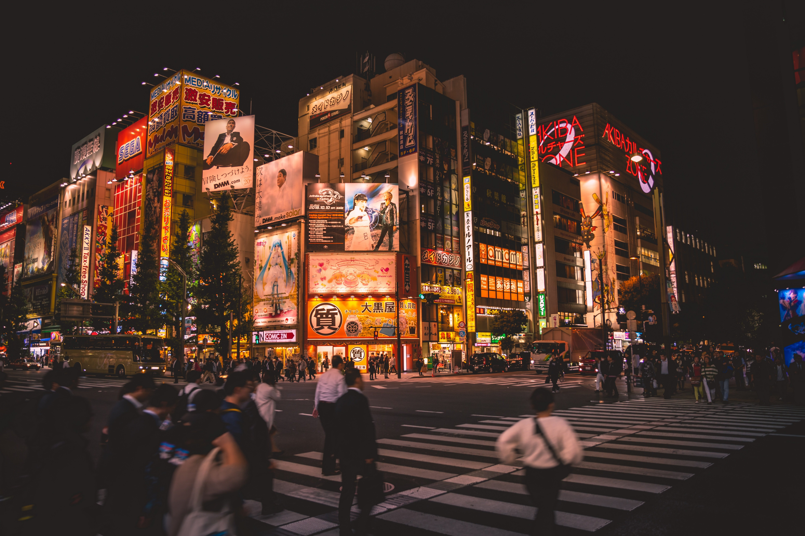
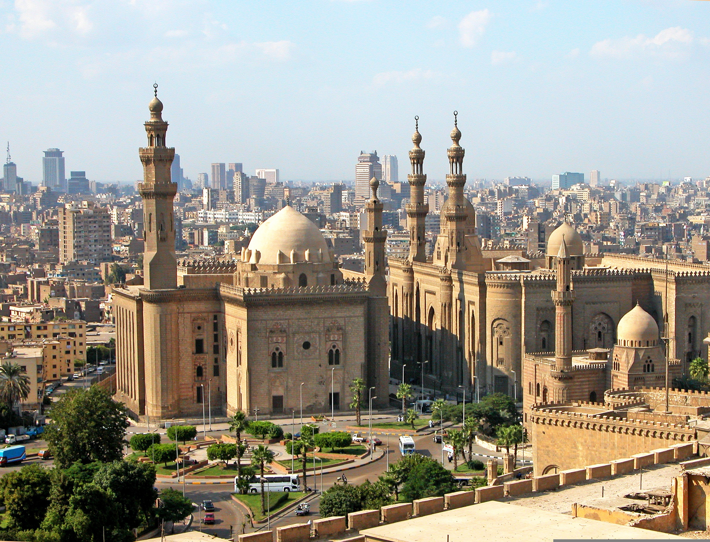

Découverte
Explorez les meilleures destinations à travers le monde, adaptées à tous les goûts et tous les budgets. Découvrez des lieux chargés d'histoire, des paysages époustouflants, et une diversité culturelle enrichissante.
Top Destinations
-
Paris, France

La ville lumière est célèbre pour ses monuments emblématiques comme la Tour Eiffel et le musée du Louvre. Promenez-vous le long de la Seine, visitez Montmartre, et savourez des pâtisseries dans ses charmants cafés. Ne manquez pas les Champs-Élysées et l'Arc de Triomphe pour une expérience parisienne complète.
-
Tokyo, Japon
Un mélange fascinant de traditions anciennes et de technologies modernes. Admirez les cerisiers en fleurs à Ueno Park, explorez le marché de Tsukiji pour des sushis frais, et plongez dans l'univers animé d'Akihabara. Les temples de Meiji et Senso-ji offrent une touche spirituelle à votre visite.
-
New York, États-Unis

Surnommée "la ville qui ne dort jamais", New York regorge de sites emblématiques. Montez au sommet de l'Empire State Building, promenez-vous dans Central Park et assistez à un spectacle de Broadway. Le quartier de Brooklyn et ses galeries d'art valent également le détour.
-
Le Caire, Égypte
Plongez dans l'histoire antique avec les pyramides de Gizeh et le musée égyptien, où vous trouverez des trésors inestimables. Explorez le vieux Caire et ses églises coptes, puis détendez-vous lors d'une croisière sur le Nil pour admirer les paysages égyptiens uniques.